Universidad Nacional de Ingeniería · Facultad de Ciencias · Escuela de Ciencias de la Computación
Práctica Calificada 3
Borg IA Cube: sistema distribuido de CNN con chat multiplataforma y middleware RabbitMQ
CC4P1 Programación Concurrente y Distribuida · Ciclo 2026-II
Integrantes: ______________________________
1. Resumen
Borg IA Cube es un chat donde el usuario envía la foto de una célula desde Android, escritorio o web y recibe el diagnóstico de una red neuronal convolucional (CNN). Cada "cubo" es una capacidad de IA: el modelo A detecta malaria (célula parasitada o no infectada) y el modelo B clasifica 8 tipos de células sanguíneas. Las CNN están escritas desde cero en Go, sin TensorFlow ni PyTorch, y se entrenan en las 4 configuraciones pedidas: secuencial, paralela, distribuida y paralela distribuida.
Los clientes hablan con el backend por sockets TCP propios. El backend, los nodos IA y los nodos de base de datos se comunican solo por RabbitMQ. Hay 3 bases de motores distintos (PostgreSQL, MariaDB y MySQL), cada una manejada por su propio nodo; 3 lenguajes en nodos independientes (Java, Go y Python, más Kotlin en Android); y 3 sistemas operativos (Linux, Windows y Android).
Resultado
Valor
Accuracy de prueba, modelo A (malaria)
95,2 %
Accuracy de prueba, modelo B (células sanguíneas)
88,6 %
Speedup del entrenamiento, paralelo con 12 hilos
7,0× (A) · 7,5× (B)
Saturación: 3000 transacciones (Android + escritorio + web a la vez)
0 errores
Consistencia de BD1, BD2 y BD3 tras 17 131 consultas y 1000 registros
sin inconsistencias
2. Arquitectura
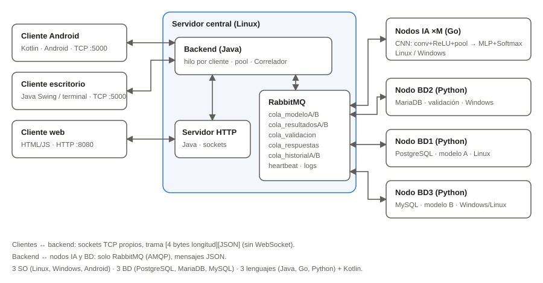
Figura 1. Arquitectura diseñada.
Módulo
Lenguaje
SO
Función
Comunicación
Cliente Android
Kotlin
Android
Chat: login/registro, enviar imagen, historial, prueba de estrés
TCP propio → backend :5000
Cliente escritorio
Java (Swing y terminal)
Windows
El mismo chat; la versión terminal permite ingresar registros uno por uno
TCP propio → backend :5000
Cliente web
HTML/JS + servidor HTTP propio (Java)
navegador
El mismo chat, servido por un servidor HTTP hecho con ServerSocket
HTTP → servidor web → TCP propio → backend
Backend
Java
Linux
Valida usuarios, enruta imágenes a RabbitMQ y devuelve el resultado
TCP con clientes + RabbitMQ
Nodo IA (×M)
Go
Linux / Windows
Ejecuta la CNN; también hace de worker en el entrenamiento distribuido
Consume/publica en RabbitMQ
Nodo BD2
Python + MariaDB
Windows
Validación del cliente, del producto (modelo) y de la imagen
RabbitMQ (RPC)
Nodo BD1 / BD3
Python + PostgreSQL / MySQL
Linux / Windows
Guardan imagen, resultado e historial de los modelos A / B
RabbitMQ
Colas de RabbitMQ (exchange ex_cubo, directo): cola_modeloA, cola_modeloB, cola_resultadosA, cola_resultadosB, cola_validacion, cola_respuestas, cola_historialA/B y cola_entrenamiento. Colas de control (exchange ex_control, topic): cola_heartbeat, cola_logs y cola_metricas. Los mensajes que fallan van a cola_errores (dead letter).
3. Protocolo de comunicación
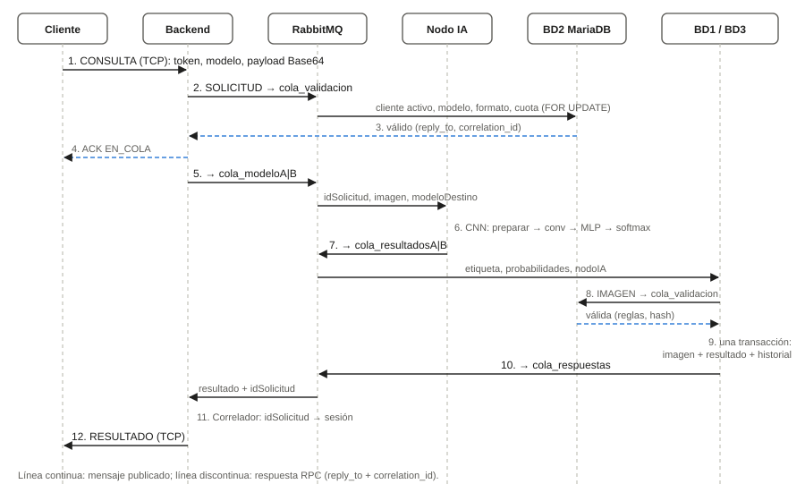
Figura 2. Diagrama de protocolo: Cliente → Backend → RabbitMQ → Nodo IA → RabbitMQ → Nodo BD → RabbitMQ → Backend → Cliente.
3.1 Cliente ↔ backend (sockets TCP propios)
Cada mensaje es una trama [4 bytes con la longitud N, big-endian][N bytes de JSON en UTF-8]. El JSON se arma y se lee a mano (clase Json.java; org.json del SDK en Android). readFully reconstruye una trama partida en varios segmentos TCP.
Las validaciones son RPC: el que pregunta publica con reply_to (su cola privada) y un correlation_id, y BD2 responde a esa cola con el mismo identificador.
4. Inteligencia artificial
4.1 Datasets
Modelo A: malaria
Modelo B: células sanguíneas
Fuente
NIH / National Library of Medicine, "Malaria Cell Images" (Kaggle: Cell Images for Detecting Malaria)
BloodMNIST, de MedMNIST v2 (Yang et al., 2023), derivado del dataset de Acevedo et al. (2020)
Relleno a cuadrado con negro (centrado), redimensión bilineal a 32×32, RGB
Imágenes de 28×28 RGB de MedMNIST
Los dos datasets se guardan en un formato binario propio (malaria_32.bin, blood_28.bin): cabecera DSET con N, C, H, W y K, y luego por imagen [split][etiqueta][C×H×W bytes]. Al entrenar, cada canal se normaliza con la media y la desviación del set de entrenamiento. El nodo IA aplica el mismo relleno, redimensión y normalización a las imágenes que llegan por el chat.
67 122 parámetros (A) y 52 152 (B). Se entrena con SGD con momentum 0,9, tasa 0,01, lotes de 32 y entropía cruzada. El backpropagation se escribió a mano y se verifica con una prueba que compara el gradiente analítico con el numérico (go test ./cnn).
4.3 Entrenamiento concurrente, paralelo y distribuido
Secuencial: 1 proceso, 1 hilo.
Paralelo: cada lote se reparte entre H goroutines. Cada una acumula el gradiente en su propio búfer (sin escrituras compartidas, sin condición de carrera); un sync.WaitGroup hace de barrera y luego se suman los búferes.
Distribuido: el coordinador (entrenar -modo dist) publica en cola_entrenamiento una tarea por nodo con los pesos actuales y las imágenes que le tocan. Cada nodo IA hace K = 10 pasos de SGD con 1 hilo y devuelve sus pesos a la cola privada del coordinador, que los promedia ponderando por muestras (promedio de modelos). Luego empieza la siguiente ronda.
Paralelo distribuido: igual que el distribuido, pero cada nodo usa todos sus núcleos con el esquema paralelo.
4.4 Métricas de los modelos entregados (12 épocas, modo paralelo)
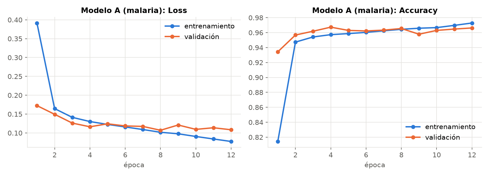
Figura 3. Loss y accuracy por época, modelo A.
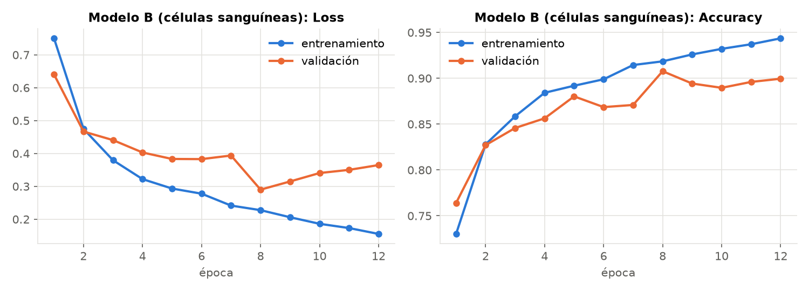
Figura 4. Loss y accuracy por época, modelo B.
Modelo
Accuracy de entrenamiento
Accuracy de validación
Accuracy de prueba
A (malaria)
97,3 %
96,6 %
95,2 %
B (sangre)
94,4 %
90,0 %
88,6 %
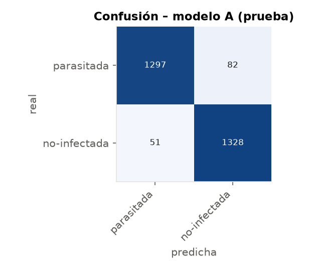
Figura 5. Matriz de confusión, modelo A.
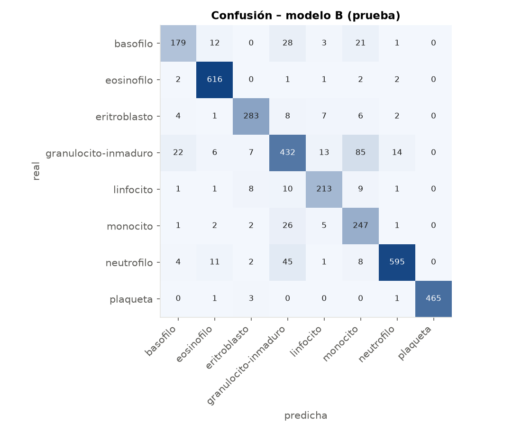
Figura 6. Matriz de confusión, modelo B.
En el modelo B, la mayoría de los errores mezclan granulocitos inmaduros con monocitos y neutrófilos, que son morfológicamente parecidos. Las plaquetas y los eosinófilos casi no se confunden.
Validación del cliente (clave con hash SHA-256 y sal, estado, cuota diaria), del producto (modelo habilitado) y de la imagen (formato, tamaño, dimensiones, hash bloqueado)
BD3
MySQL 8.4
las mismas que BD1
Datos del modelo B
Los scripts de creación están en codigo/sql/. Cada consulta se valida dos veces contra BD2 por RabbitMQ: antes de la IA (cliente, modelo y cuota) y antes de guardar (imagen).
Escrituras concurrentes sin corrupción
Cada nodo BD atiende los mensajes con un pool de hilos y una conexión por hilo, nunca compartida.
Imagen, resultado e historial se guardan en una sola transacción: o entran las tres filas o ninguna.
La cuota se descuenta con SELECT … FOR UPDATE: dos consultas simultáneas del mismo cliente no pueden leer el mismo saldo.
Las inserciones son idempotentes (UNIQUE + ON CONFLICT DO NOTHING / INSERT IGNORE): si RabbitMQ entrega dos veces el mismo mensaje, no se duplica nada.
Prueba de concurrencia (pruebas_concurrencia.py)
Resultado
20 hilos insertan el mismo id_solicitud en BD1 y en BD3
1 fila por tabla ✔
50 hilos piden validación para un cliente con cuota 10 en BD2
exactamente 10 aprobadas ✔
20 hilos registran el mismo usuario nuevo en BD2
exactamente 1 creado ✔
6. Concurrencia en cada componente
Componente
Hilos
Sincronización / cómo se evitan las condiciones de carrera
Backend (Java)
1 hilo por conexión (CachedThreadPool) + pool fijo para procesar consultas
Cada sesión escribe en su socket con un ReentrantLock, así las tramas no se intercalan. ConcurrentHashMap para sesiones y solicitudes pendientes; el remove atómico del Correlador garantiza una sola respuesta aunque coincidan resultado y timeout. Las publicaciones pasan por una LinkedBlockingQueue que vacía un único hilo publicador (un canal AMQP no se comparte). Contadores con AtomicLong
Servidor HTTP (Java)
Pool de 128 hilos
ConcurrentHashMap de sesiones web y LinkedBlockingQueue de eventos por sesión
Nodo IA (Go)
H goroutines por modelo
Productor-consumidor: RabbitMQ entrega hasta H mensajes (prefetch) y las goroutines los leen de un canal de Go. Los pesos solo se leen al predecir. Publicador protegido con sync.Mutex; contadores con atomic.Int64
Nodos BD (Python)
ThreadPoolExecutor
Una conexión por hilo, transacciones, FOR UPDATE, inserciones idempotentes y threading.Lock para los contadores
Android (Kotlin)
Hilo lector, hilo de ping, hilos de envío
Escritura del socket en synchronized; ConcurrentHashMap y AtomicInteger en la prueba de estrés; la interfaz solo se toca desde runOnUiThread
7. Desarrollo del programa
codigo/java/src/cubo/backend/: Backend (aceptador TCP, pools, heartbeat y métricas), ManejadorCliente (lee tramas y despacha LOGIN, REGISTRO, CONSULTA e HISTORIAL), PuenteRabbit (topología, publicador y RPC), Correlador (idSolicitud → sesión, con timeouts) y Sesion.
codigo/java/src/cubo/web/: servidor HTTP propio (PeticionHttp y RespuestaHttp parsean y arman HTTP/1.1 a mano). Sirve codigo/web/ y reenvía cada acción del navegador al backend por TCP.
codigo/java/src/cubo/desktop/: ClienteDesktop (Swing: burbujas de chat, selector de imagen, historial) y ClienteTerminal (versión base en terminal, con registro de usuarios uno por uno). cubo/carga/GeneradorCarga: envía N consultas o registros con delay aleatorio y C sesiones concurrentes.
codigo/go/: cnn/ (red, backpropagation, dataset y preprocesamiento de imágenes), distrib/ (tareas de entrenamiento por RabbitMQ y promedio de modelos), rmq/ (topología, heartbeat, métricas y logs), cmd/nodo (nodo IA) y cmd/entrenar (4 modos, CSV de métricas y matriz de confusión).
codigo/python/: nodo_bd.py (un proceso por base), validador.py (reglas de BD2), adaptadores.py (dialectos y pool), verificar_consistencia.py, pruebas_concurrencia.py, monitor.py (colas, CPU y memoria) y graficas.py.
codigo/android/: Conexion.kt (socket y protocolo) y MainActivity.kt (login, chat, historial y prueba de estrés de 1000 envíos que guarda carga_ANDROID.csv).
Librerías externas: solo los clientes de RabbitMQ (amqp-client, amqp091-go, pika), que el enunciado permite, y los drivers de las bases (psycopg2, pymysql). No se usa WebSocket, Socket.IO ni frameworks web; la CNN usa solo la biblioteca estándar de Go.
8. Despliegue en red
Nodo
SO
Lenguaje
Base
Servidor en Google Cloud (VM Ubuntu): RabbitMQ + backend + servidor web
Linux
Java
—
Laptop 1: nodo BD2 y clientes de escritorio y web
Windows
Python, Java
MariaDB
Laptop 2: nodos IA y nodo BD1
Linux
Go, Python
PostgreSQL
Laptop 3: nodo BD3 y nodos IA
Windows
Python, Go
MySQL
Celular
Android
Kotlin
—
Todos los nodos se conectan hacia el servidor (CUBO_RABBIT_URL=amqp://cubo:…@IP:5672/cubo), así que no hace falta abrir puertos en las laptops; en la VM se abren 5000, 8080 y 5672. Los pasos están en PC3/NUBE_GCP.md.
9. Evaluación de desempeño
Entorno de las mediciones: una laptop con Intel Core i5-13420H (8 núcleos, 12 hilos) y 16 GB de RAM. Cada "máquina" de las configuraciones distribuidas es un contenedor Linux limitado a núcleos propios con --cpuset-cpus: 1 núcleo físico en dist y 4 núcleos lógicos en pardist. RabbitMQ, el backend y los nodos BD corren en Windows. Los mismos scripts sirven en el clúster real.
9.1 Entrenamiento en las 4 configuraciones (3 épocas, semilla fija)
Configuración
Máquinas × hilos
A: s/época
A: speedup
A: acc. prueba
B: s/época
B: speedup
B: acc. prueba
Secuencial
1 × 1
57,4
1,00
95,3 %
25,9
1,00
83,7 %
Paralelo
1 × 12
8,2
7,02
95,0 %
3,4
7,51
83,9 %
Distribuido
2 × 1
26,8
2,14
92,6 %
11,4
2,26
82,3 %
Distribuido
3 × 1
16,8
3,41
82,3 %
6,7
3,85
80,2 %
Paralelo distribuido
2 × 4
10,6
5,40
92,9 %
4,7
5,47
82,9 %
Paralelo distribuido
3 × 4
10,2
5,65
82,9 %
4,4
5,90
80,5 %
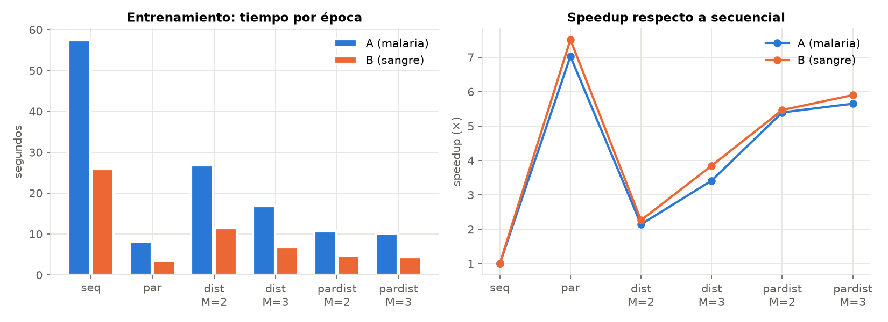
Figura 7. Tiempo por época y speedup del entrenamiento.
El paralelo en una máquina es el más rápido porque no paga comunicación. El distribuido escala casi linealmente (2,1× con 2 nodos y 3,4× con 3, cada uno con 1 núcleo): incluso supera la eficiencia ideal porque cada nodo usa un núcleo físico completo y su parte de los datos cabe mejor en caché. En el paralelo distribuido, el tercer nodo aporta poco: sus núcleos (8–11) son los de eficiencia del i5 y además los comparte con RabbitMQ y Windows. El promedio de modelos cada 10 pasos baja el accuracy con 3 nodos y solo 3 épocas (82–83 %), porque cada nodo ve un tercio de los datos entre promedios; con más épocas o sincronizando más seguido se recupera (el modelo entregado se entrenó 12 épocas).
9.2 Inferencia: 2000 consultas (1000 por escritorio + 1000 por web, 32 sesiones, delay aleatorio 0–50 ms)
Configuración
Nodos IA × núcleos
Throughput (tx/s)
Latencia media (ms)
Errores
Secuencial
1 × 1 (1 hilo)
155,4
3 410
0
Paralelo
1 × 4 (8 hilos)
176,4
2 037
0
Distribuido
2 × 1
174,1
2 444
0
Distribuido
3 × 1
179,9
2 069
0
Paralelo distribuido
1 × 4
180,2
2 143
0
Paralelo distribuido
2 × 4
180,8
1 478
0
Paralelo distribuido
3 × 4
176,5
1 939
0
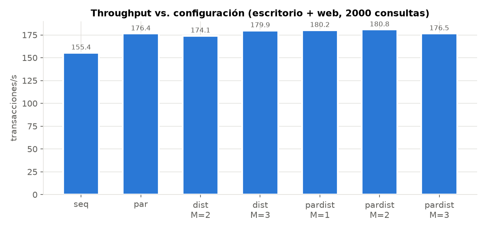
Figura 8. Throughput vs. configuración.
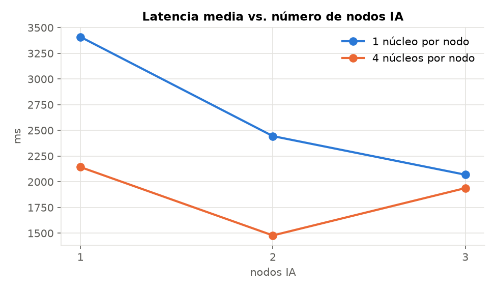
Figura 9. Latencia vs. número de nodos IA.
En secuencial el cuello de botella es el nodo IA: cola_modeloA/B llega a 346 mensajes en espera. Con más núcleos o más nodos esas colas quedan vacías y la latencia baja de 3,4 s a 1,5 s; a partir de ahí lo que se acumula es cola_resultadosA/B. El límite pasa a los nodos BD, que por cada consulta validan contra BD2 y hacen una transacción, y el throughput se estabiliza en unos 180 tx/s. Para subirlo habría que replicar los nodos BD1/BD3 o darles más hilos, no agregar nodos IA. Una inferencia aislada tarda unos 2,6 ms.
9.3 Prueba de saturación: Android + escritorio + web a la vez (1000 transacciones cada uno, delay aleatorio 0–50 ms, 3 nodos IA)
Cliente
Transacciones
OK
Tasa de errores
Latencia media (ms)
p95 (ms)
Throughput (tx/s)
Escritorio
1000
1000
0 %
2 046
3 368
83,8
Web
1000
1000
0 %
2 082
3 372
83,8
Android (Genymotion)
1000
1000
0 %
393
2 607
25,3
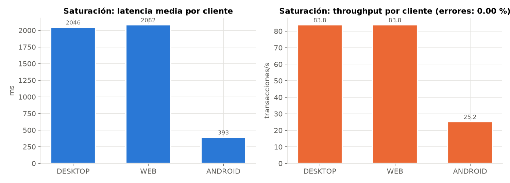
Figura 10. Latencia y throughput por cliente durante la saturación.
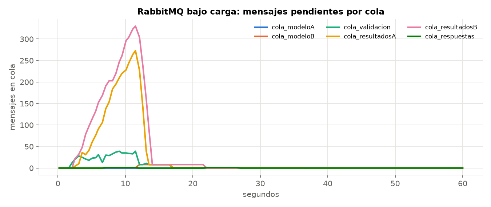
Figura 11. Uso de RabbitMQ bajo carga: mensajes pendientes por cola.
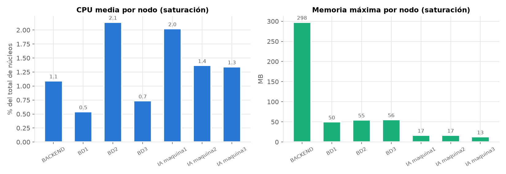
Figura 12. CPU y memoria de cada nodo durante la saturación.
Durante el pico, cola_resultadosB llega a ~330 mensajes y cola_resultadosA a ~270, y las dos se vacían en unos 2 s cuando termina la ráfaga. Las colas de los modelos casi no crecen. Android envía en un solo hilo con su propio delay, por eso ofrece menos carga y ve menos latencia. La CPU se mide como porcentaje del total de núcleos del equipo (los nodos IA, de los 4 núcleos de su contenedor). El backend Java es el que más memoria usa (167 MB); cada nodo IA en Go usa menos de 20 MB.
9.4 1000 registros nuevos y validación de BD1, BD2 y BD3
El generador registró 1000 clientes nuevos aleatorios (--tipo REGISTRO, 8 sesiones): 1000 OK, latencia media de 25 ms y 146 registros/s. Después de todas las pruebas, verificar_consistencia.py cruzó las tres bases:
Chequeo
Valor
Resultados en BD1 (PostgreSQL) / BD3 (MySQL)
8 510 / 8 621
Validaciones de imagen válidas en BD2 (MariaDB)
17 131
Resultados sin validación en BD2 · en BD1 y BD3 a la vez · duplicados
0 · 0 · 0
Consultas OK para el cliente sin resultado guardado
0
Clientes en BD2 (1004 iniciales + 1000 registrados + 1 de prueba manual)
2 005
Resultado
BD1, BD2 y BD3 consistentes
10. Conclusiones
El sistema cumple el flujo pedido de punta a punta con los tres clientes, usando sockets propios entre clientes y backend y RabbitMQ como único middleware entre el backend, los nodos IA y los nodos BD.
Las CNN escritas desde cero alcanzan 95,2 % (malaria) y 88,6 % (8 tipos de células). El entrenamiento escala hasta 7,5× en paralelo y 3,9× al distribuirlo en 3 nodos de un núcleo.
RabbitMQ desacopla las etapas: bajo saturación los mensajes esperan en las colas en lugar de perderse (0 errores en 3000 transacciones simultáneas). La profundidad de cada cola muestra en tiempo real cuál es el cuello de botella.
Las transacciones, FOR UPDATE, las inserciones idempotentes y una conexión por hilo mantienen consistentes las tres bases bajo escritura concurrente.
Anexo: cómo ejecutar
El detalle está en PC3/README.md. En resumen: crear las bases con codigo/sql/*.sql; compilar Java (javac -d out -cp "lib/*" …), Go (go build ./cmd/...) y Android (gradlew assembleDebug); levantar con scripts/local.sh; medir con scripts/mediciones.sh y graficas.py.
Para compilar desde el comprimido de entrega, que solo trae fuentes, faltan dos archivos que no son código fuente: el módulo de Go, go.mod con module cubo/ia, go 1.24 y require github.com/rabbitmq/amqp091-go v1.10.0; y el AndroidManifest.xml con el permiso INTERNET y MainActivity como actividad principal. Los modelos entrenados se regeneran con entrenar -modelo A|B -modo par -epocas 12.